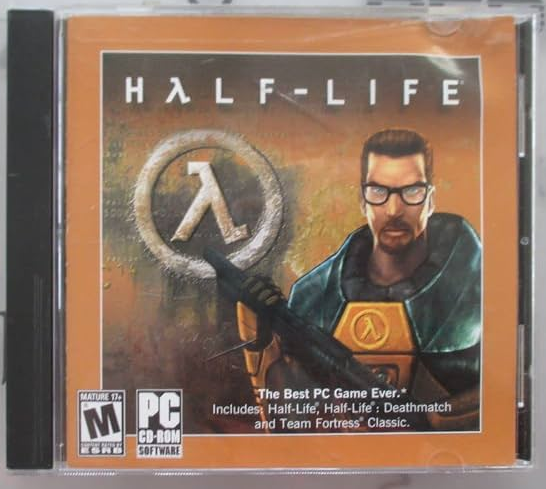
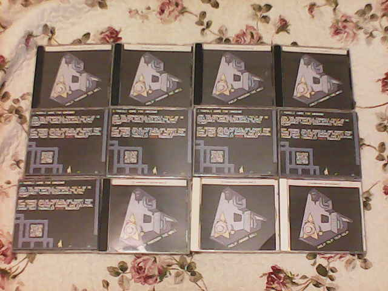
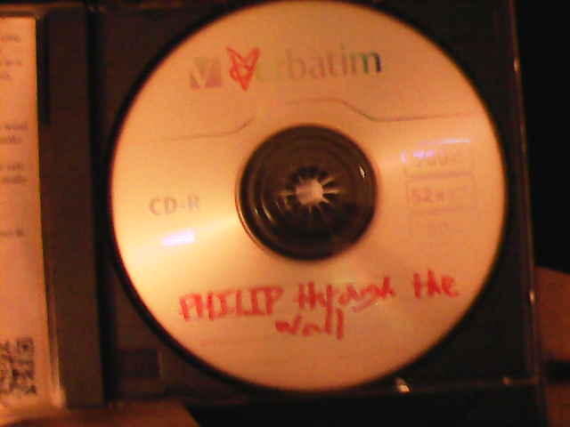

making physical cds for PHILIP ttw
9-20-26
i was talking with one of my coworkers the other day about how physical media is being phased out everywhere, specifically with sony recently. i dont remember which one of us connected the dots but we really briefly talked about me putting one of my games on a disc. i kind of couldnt stop thinking about that for the rest of my work day, which is good because when i get stuck on a dumb thought im into it makes the day go by pretty quick.
after i clocked out i texted my friend who runs a store if i could sell my games there and he gave me the thumbs up!

i started with the case.
most physical games that i saw growing up were in the tall skinny cases, but i was thinking of the badass half life 1 stubby short and more square cases pictured there to the left.
looking into it a bit more i learned these are called jewel cases and there are actually tons of resources online for making covers for these! i made use of
some of these templates by disc makers, specifically the traycard and 2 page front insert, and combined them into one file to minimize how many pages id have to print.
there were a lot of local options but i decided to print them at home while im still living somewhere with a printer.
(if youre interested in doing something similar but dont have your own printer id suggest looking at your local library, mine offered double sided color prints for just 1 dollar per page which is the cheapest i saw in town!)
i happened to have a single jewel case laying around because i bought a music cd from goodwill i thought one of my friends would like and forgot to give it to him before he left for college. lol. did a test print of just the template and it fit, woohoo! did a crummy quick mock up of a philip ttw cover, put it in the case, and it felt a little magical to be holding that.
next i looked into the files to put on the disc.
a cd-r can fit 700 megabytes and philip ttw is only 92mb uncompressed so i grabbed a bunch of those from staples (and a cd/dvd writer). standard dvds can fit 4.7 gigabytes but there are alternatives that have more storage, so if you have a big game but can compress it down enough you may still be able to do this.
read speeds are a little miserable, and even though this game isnt crazy load intensive i thought itd be better to make an installer for it. i thought this would be at least a little bit of trouble but i really quickly found
inno setup which makes software installers for windows through a really basic wizard, plus it compressed the game to nearly 1/3 of its original size!
i had the files burned onto discs, i had the cover ready to print, but got stuck for a few days on my lack of cases. there are no nearby stores that sell empty jewel cases!
i checked walmart, staples, and best buy online and they were all duds. i even checked them in person and yep the websites were correct. i dunno really what i expected there. i did buy some crummy skinny cases that could only have a front cover inserted but pretty quickly regretted that.
i went back to goodwill and they had maybe a dozen old cds in jewel cases, but they were either busted up or really dirty. i was worried for a little that i would either have to give up or order cases off amazon. eventually i found what i was looking for at a local flea market and it was a really beautiful moment. a giant shelf stuffed head to toe with what had to be a few hundred cds, most of them only costing 50 cents. after spending a smooth 11 dollars there i actually found a use for the crummy skinny cases i mentioned earlier, to put the old cds into instead of tossing them!
the last thing really of note was cutting out the covers from the prints, and this. was. doggone. exhausting.
the 12 copies i made took almost 2 hours to cut out!!! was this a me issue? am i bad cutter? i dont know the answer to that but i am certainly conning one of my friends into this when i do it again.
the results though? pretty damn cool if i say so myself.


the sharpie on the disc is a little dumpy looking but whateva.
ive got some info on money too.
the cases cost 50 cents each, about the same with the cds. its hard to gague how much my at home prints costed, but ill use a high estimate of what my local library charges for a double sided color print which is 1 dollar.
each case, not counting labor or tax, cost 2 dollars to make. not bad at all!
what is bad, though, is the 110 dollars i spent on printer ink and a disc burner. the ink will last a long time and can be used for other things, the burner will last a long time and can be used for other thing but i doubt itll get much use outside of more of this.
i made 12 cases but im giving 7 to friends so only 5 will make it to the store. theyre going to be sold at 10 dollars each and ill be making a good profit per disc sold but not enough to cover what i put into the whole project. i think it was still worth it to do something cool like this though!
i wasnt shy in the about me part on the inside of the front cover that my games are free online, the back of the case even has a qr code to the free download on itch. i dont know if they will sell at all, but ill make an update in a few weeks on how they do on shelves.